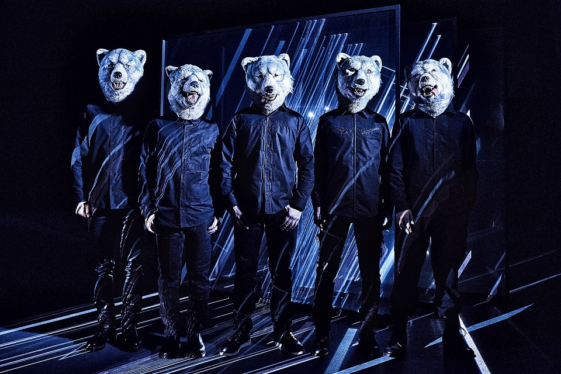
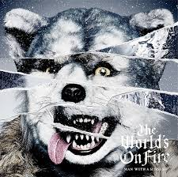
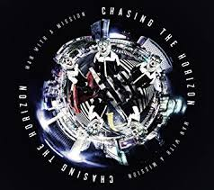

| BIOGRAPHY | | | MUSIC |

| 紹介 |
|
MAN WITH A MISSION(マンウィズアミッション)は日本の5人組ロックバンド。 所属レーベルはソニー・ミュージックレコーズ。所属芸能事務所はeggman Co.,Ltd. 頭はオオカミ、身体は人間という外見の究極の生命体5人で構成されるという設定である。 バンド名は英語で「使命を持った男」という意味.MWAMやマンウィズなどの略称で呼ばれる。 また、その外見からオオカミバンドと俗称される事もある。 2010年より活動。 |
|---|
| 個人的好きなアルバムランキング | ||
|  | The World's On Fire | |
|---|---|---|
| MAN WITH A MISSIONの5枚目のフルアルバム。2018年6月6日に発売 |  | Chasing the Horizon |
| MAN WITH A MISSIONの4枚目のフルアルバム。2016年2月10日に発売 | ||
| MASH UP THE WORLD | ||
| MAN WITH A MISSIONの2枚目のフルアルバム。2012年7月18日に発売 | ||